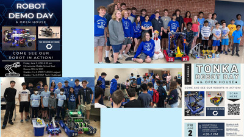
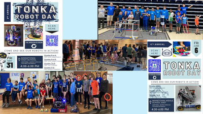
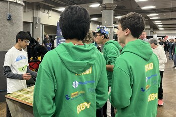
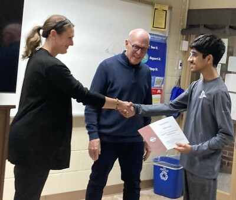
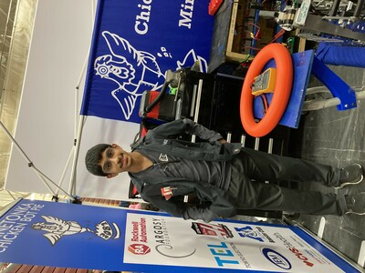

Leadership and Service:
Both begin with an idea and grow through collaboration and action. I have learned that real leadership is less about titles and more about creating space for others to grow and succeed.
-
Founder and President, RoboCyclers, a 501(c)(3) nonprofit, 2023-present



- Tackling the global problem of electronic waste.
- Providing education, resources for other students to take action, and e-waste collecton drives.
- Annual comunity-building festival to bring together students, robotics teams, and parents interested in STEM and robotics.
- Expanding to inner city St. Paul school in 2026.
- Founded chapter of Toastmasters Youth Leadership Program in my high school to help students who were struggling with speaking in class and class presentations.
- Overcame budget deficit and raised $37K, while building and strengthening sponsor relationships, to ensure successful season.
- Coaching high school and middle school robotics - fundraising, engineering design portfolio.
- Applied for grant, ran successful fundraising campaign for underserved youth programs, and expanded opportunities for underserved youth to participate in science-based activities, 2024-present.
Tonka Toasters
, 2024-present

Operations Captain
, Chicken Bot Pie, Team 3082, FIRST Robotics Competition (FRC), 2022-2024
